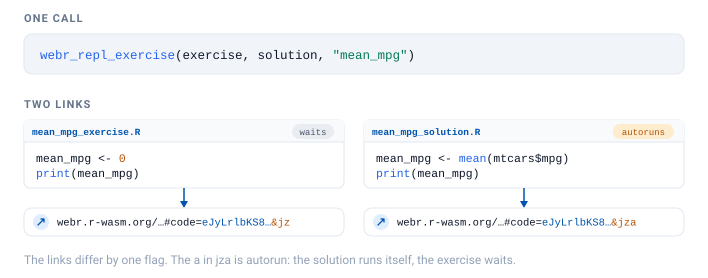
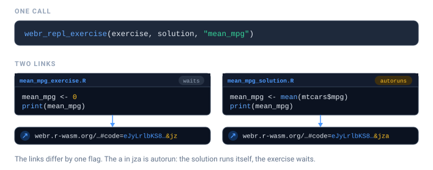
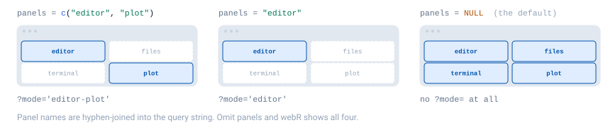
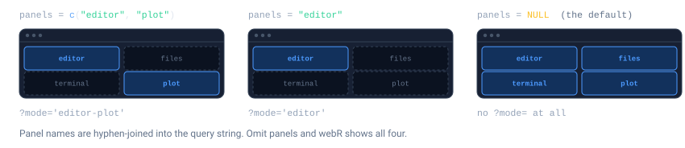
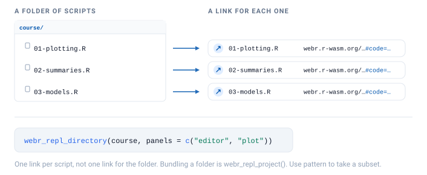
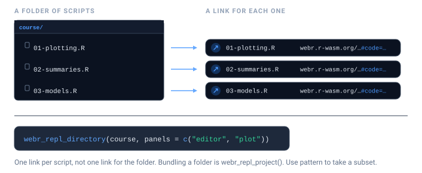
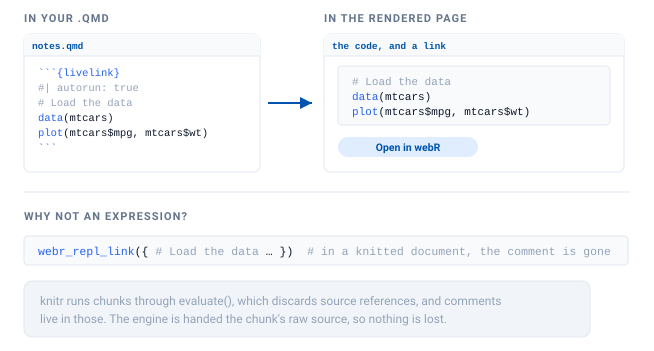
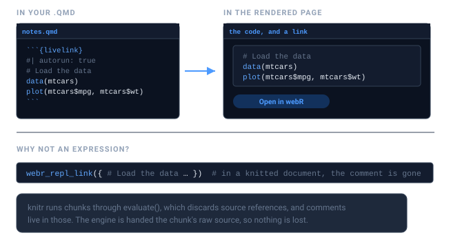
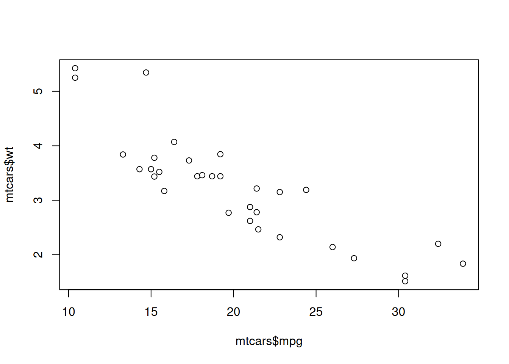

exercise <- "
# Exercise: what is the mean mpg of the cars in mtcars?
# Replace the 0 below with your answer.
mean_mpg <- 0
print(mean_mpg)
"
solution <- "
# Solution
mean_mpg <- mean(mtcars$mpg)
print(mean_mpg)
"
links <- webr_repl_exercise(exercise, solution, "mean_mpg")
linksThe hardest part of teaching R is not R. It is the twenty minutes at the start of a workshop spent installing R, then RStudio, then a package that fails to compile on one student’s laptop.
livelink sidesteps that. A link opens a working R session in the browser, with your code already in the editor. Nothing to install, nothing to configure, and it works on a school Chromebook.
Exercise and solution pairs
webr_repl_exercise() is built for the most common teaching shape: give students a scaffold with the answer removed, and keep the worked solution behind a second link.


These are written as plain strings on purpose. An exercise is mostly its instructions, and those live in comments, so a braced { } expression would drop them the moment these notes are knitted. Links inside documents explains why.
The two links differ in one deliberate way: the solution autoruns and the exercise does not. Students landing on the exercise see the code sitting there waiting for them. Students landing on the solution see the answer already computed.
links$exercise$autorun
#> [1] FALSE
links$solution$autorun
#> [1] TRUEHand out the exercise link in class, and hold the solution link back until afterwards, or put it behind a collapsed callout in your notes.
repl_urls(links)
#> exercise
#> "https://webr.r-wasm.org/latest/#code=eJxtjc0NgkAQhe9bxUQvehA4GxNPNkADZCFPdxP2J7tDFm8mVmAPdGA1dCMQuXGb%2Bd778j7vwUqDr4G0lfGPCj1CoyOycvCS1bjLlTPIE%2Bqqiwj5VpHR8%2FgSe7r92ZmSkkw6EivQrNCkkLsvfyNDJD0hnq%2Fr5JXwrWywpAXVaF2ipFnR03WBpI0JIRNi3abLiQrhg7Z8WNlR%2FABOeUpa&mz"
#> solution
#> "https://webr.r-wasm.org/latest/#code=eJyb2LIkLzE3dXNuamJefG5Benxxfk5pSWZ%2Bnl7QkoLEkoybSvoZ%2Bbmp%2BuWpSfGlxalF%2BtgUlqRWlNy05FJWCIaKccFUKdjoKoDYGrklyYlFxSpAIU2ugqLMvBINmBJNruWJpSX5RaV5hwHY2Td6&mza"Choosing what students see
A full webR session shows an editor, a plot pane, a file browser, and a terminal. For a first-year class that is a lot of surface area, and the terminal in particular invites students to wander off.
panels controls which of them appear.


# A focused exercise: just write code and see the plot
webr_repl_link("plot(1:10)", panels = c("editor", "plot"))
# The full environment, for a project week
webr_repl_link(code, panels = c("editor", "plot", "files", "terminal"))For a lecture demo, where students should see the result and not the machinery, combine autorun with a plot-only view:
webr_repl_link(
"hist(rnorm(1000), col = 'steelblue', main = 'The central limit theorem, again')",
autorun = TRUE,
panels = "plot"
)Only .R files can autorun. Ask for it on something else and livelink tells you rather than quietly producing a link that does nothing:
webr_repl_link("some data", filename = "data.csv", autorun = TRUE)
#> Warning: `autorun` was ignored
#> ! Only R files can be auto-executed, but 'data.csv' is not one.
#> ℹ Give `filename` a `.R` extension to enable autorun.A whole folder of scripts
Course material tends to live as a directory of scripts, and livelink gives you two ways to turn that folder into links. Which you want comes down to a single question: are the scripts independent, or parts of one thing?
webr_repl_directory() gives each script its own link. That is the right call for a folder of standalone exercises: one link per file, each opening just that script.


# A small course directory
course <- file.path(tempdir(), "course")
dir.create(course, showWarnings = FALSE)
writeLines("plot(1:10)", file.path(course, "01-plotting.R"))
writeLines("mean(mtcars$mpg)", file.path(course, "02-summaries.R"))
writeLines("lm(mpg ~ wt, mtcars)", file.path(course, "03-models.R"))
links <- webr_repl_directory(course, panels = c("editor", "plot"))
#> ✔ Found 3 files matching pattern "\\.R$"
#> ℹ Processing files in '/tmp/RtmpFMTGiP/course'...
#> ✔ Successfully created 3 WebR links
linksThe result is named by file, so it drops straight into a table of contents:
urls <- repl_urls(links)
cat(sprintf("- [%s](%s)", names(urls), urls), sep = "\n")
#> - [01-plotting.R](https://webr.r-wasm.org/latest/?mode='editor-plot'#code=eJyb2LwkLzE3da2BoW5BTn5JSWZeul7QkoLEkow9%2Bhn5uan65alJ8aXFqUX6qCpKUitKVoH4GoZWhgaaAA8cG5M%3D&mz)
#> - [02-summaries.R](https://webr.r-wasm.org/latest/?mode='editor-plot'#code=eJyb2LwkLzE3dZ2BkW5xaW5uYlFmarFe0JKCxJKMvfoZ%2Bbmp%2BuWpSfGlxalF%2BmhKSlIrSjbkpibmaeSWJCcWFavkFqRrAgAESB9v&mz)
#> - [03-models.R](https://webr.r-wasm.org/latest/?mode='editor-plot'#code=eJyb2LwkLzE3dbWBsW5ufkpqTrFe0JKCxJKMXfoZ%2Bbmp%2BuWpSfGlxalF%2BsjyJakVJVtycjVyC9IV6hTKS3QUckuSE4uKNQGxch3U&mz)Use pattern to pick out a subset, say the exercises but not the solutions:
webr_repl_directory(course, pattern = "^0[12]")
#> ✔ Found 2 files matching pattern "^0[12]"
#> ℹ Processing files in '/tmp/RtmpFMTGiP/course'...
#> ✔ Successfully created 2 WebR linksOne link per file, or one link for the folder?
webr_repl_project() is the other half of the pair. It packs several files into a single link, so a script that source()s its neighbour still finds it once webR unpacks them side by side. Reach for it when the files belong together rather than standing alone.
The two are mirror images, and the table says which to reach for:
| You want | Call |
|---|---|
| each script openable on its own | webr_repl_directory(dir) |
| the whole folder bundled into one link | webr_repl_directory(dir, single_link = TRUE) |
| a hand-picked set of files bundled into one link | webr_repl_project(files) |
single_link = TRUE is the bridge between them: point it at a folder and it bundles the lot into one link, exactly as webr_repl_project() would, without your having to list the files by hand.
# the same course folder, as one bundled link instead of three
webr_repl_directory(course, single_link = TRUE, panels = c("editor", "plot"))
#> ✔ Bundling 3 files into one linkEmbedding links in your notes
If you write course notes in Quarto or R Markdown, you do not have to build the link in one chunk and paste the URL into another. livelink plugs into knitr, so a chunk can carry its own link.


Add livelink: true to an ordinary r chunk. It runs as it always did, the plot appears in your notes, and a link is added underneath. Here it is, running in this very vignette:

Students read the result and get to go and poke at it. Follow the link: the comments are still there, which they would not be had you written webr_repl_link({ ... }).
For a folder of course notes, set it once and let every chunk carry a link:
knitr::opts_chunk$set(livelink = TRUE, autorun = TRUE)Links inside documents covers the rest: the engine, for code your notes should not run, every chunk option, and why echo is not what stands between you and a link.
Collecting work back in
Students send you links. decode_webr_link() accepts a vector of them and writes each into its own directory, so a stack of submissions becomes a folder you can grade.
submissions <- c(
as.character(webr_repl_link("mean(mtcars$mpg)", filename = "student_a.R")),
as.character(webr_repl_link("median(mtcars$mpg)", filename = "student_b.R"))
)
decode_webr_link(submissions, output_dir = file.path(tempdir(), "submissions"))
#> Processing 2 webR URLs...
#>
#>
#>
#> ── Processing URL 1/2: script_01
#>
#> Decompressing webR data...
#> Parsing file data...
#> Created directory: '/tmp/RtmpFMTGiP/submissions/script_01'
#> Decoding 1 file...
#> 'student_a.R' (16 bytes)
#> ✔ Successfully decoded 1 file to '/tmp/RtmpFMTGiP/submissions/script_01'
#>
#>
#>
#> ── Processing URL 2/2: script_02
#>
#> Decompressing webR data...
#> Parsing file data...
#> Created directory: '/tmp/RtmpFMTGiP/submissions/script_02'
#> Decoding 1 file...
#> 'student_b.R' (18 bytes)
#> ✔ Successfully decoded 1 file to '/tmp/RtmpFMTGiP/submissions/script_02'
#>
#> ✔ Successfully processed 2/2 URLs
#>
#>
#> ── webR Decoded Batch ──
#>
#>
#>
#> Base directory: '/tmp/RtmpFMTGiP/submissions'
#>
#> Total URLs: 2
#>
#>
#>
#> Successfully processed 2 URLs:
#>
#> 'script_01': 1 file
#>
#> '/tmp/RtmpFMTGiP/submissions/script_01'
#>
#>
#>
#> 'script_02': 1 file
#>
#> '/tmp/RtmpFMTGiP/submissions/script_02'
#>
#>
#>
#> Summary: 2 total files saved across 2 URLsIf you would rather read the code than write it to disk, preview_webr_link() shows you a submission without touching your filesystem at all, which is the safer default when the code came from someone else.